The complete analysis, in one page.
Every section of 06_agent_simulation_v2.ipynb - dataset, cognitive model, headline result, robustness checks, and honest limits - rendered from its actual saved outputs. No code required to read it; nothing here was re-run or altered from the notebook's own results.
The dataset - expanded & segregated
1,595 emails from 10 sources kept strictly separate (never blended), so cue behaviour and click rate can always be sliced per origin. Every source's origin, licence, retrieval date and cleaning steps are auto-documented in DATA_PROVENANCE.md.
| source | actual_class | n | |
|---|---|---|---|
| 0 | ceas08 | 1 | 130 |
| 1 | enron_clean | 0 | 200 |
| 2 | hybrid_vtriad | 1 | 120 |
| 3 | multi_llm | 1 | 150 |
| 4 | nazario | 1 | 110 |
| 5 | nigerian_fraud | 1 | 90 |
| 6 | phishbowl | 1 | 88 |
| 7 | plain_llm | 1 | 110 |
| 8 | spamassassin_ham | 0 | 447 |
| 9 | trec07_ham | 0 | 150 |
benign 797 | phishing 798
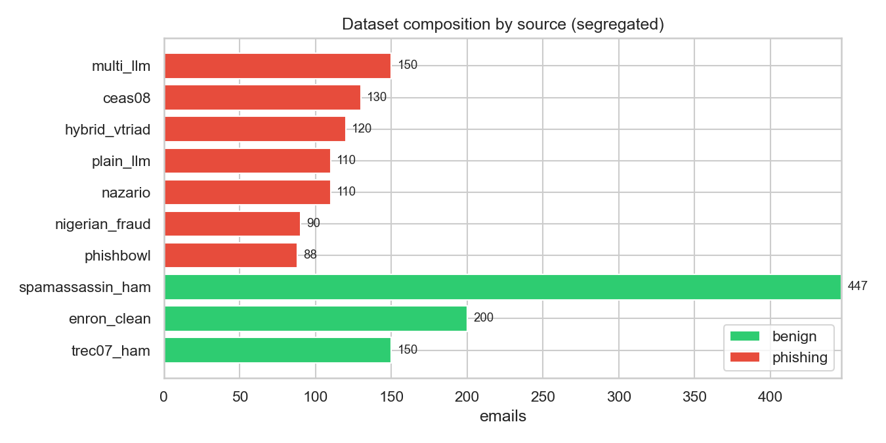
The v2 cognitive model
All quantities on one [0,1] scale. The chain: dynamic ED -> F_dynamic accumulates -> TotalFatigue -> JP falls -> FPL rises -> cues missed -> click.
The key fix: v1's Åkerstedt circadian term peaked at 4:48pm, making agents more alert late in the day - it cancelled fatigue accumulation and produced a flat workday curve. v2 drops it, so fatigue is monotone.
ED weights (W/TP/TS/JC/interaction): 0.3 0.25 0.15 0.1 0.2 F_dynamic dt: 0.22 | recovery: 0.15 JP exponents (fatigue/motiv/roleclarity): 0.5 0.3 0.2 FPL lambda_PV: 0.7 | threshold drift K: 2.0 TotalFatigue 8am 0.311 -> 4pm 0.507 (delta +0.196) FPL 8am 0.098 -> 4pm 0.211 threshold 8am 3.92 -> 4pm 4.49 (partly dynamic) OK - fatigue is monotone increasing (v1 fell).
Single-agent workday trajectory
One agent depleting across the day - the mechanism, before we look at outcomes.
| ED | F_base | F_dynamic | TotalFatigue | JP | FPL | threshold | P_click | |
|---|---|---|---|---|---|---|---|---|
| hour | ||||||||
| 8 | 0.270 | 0.359 | 0.000 | 0.359 | 0.448 | 0.118 | 2.785 | 0.299 |
| 10 | 0.376 | 0.359 | 0.036 | 0.383 | 0.440 | 0.128 | 2.858 | 0.320 |
| 12 | 0.491 | 0.359 | 0.101 | 0.424 | 0.425 | 0.145 | 2.987 | 0.360 |
| 14 | 0.616 | 0.359 | 0.196 | 0.485 | 0.402 | 0.173 | 3.178 | 0.426 |
| 16 | 0.751 | 0.359 | 0.324 | 0.567 | 0.369 | 0.213 | 3.434 | 0.527 |
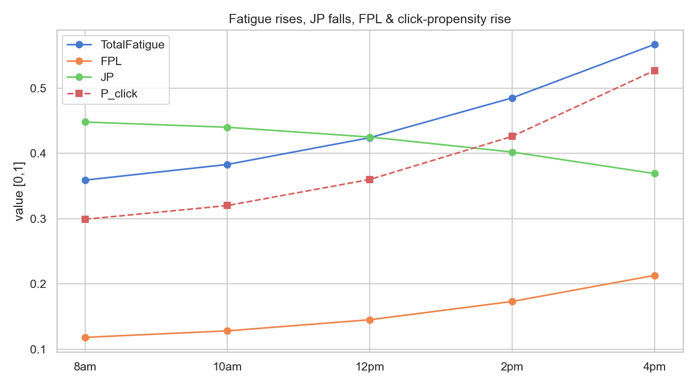
CueStrength - why some cues get missed
Not all red flags are equal. A blatant suspicious_link is hard to miss; a generic_greeting is easy to skim past. Per-cue miss probability is FPL_base x (1 - CueStrength[cue]), plus trait modifiers (age/education on URL cues, exposure bonus on account-threat cues).
This is the mechanism behind the headline: V-Triad emails carry few cues and the ones they carry are subtle.
| cue | CueStrength | cue_fpl (miss prob) | % of base FPL | |
|---|---|---|---|---|
| 0 | suspicious_link | 0.8 | 0.169 | 116.442 |
| 1 | suspicious_sender | 0.8 | 0.169 | 116.442 |
| 2 | personal_info | 0.7 | 0.044 | 30.000 |
| 3 | threats | 0.7 | 0.044 | 30.000 |
| 4 | urgency | 0.6 | 0.058 | 40.000 |
| 5 | too_good_true | 0.6 | 0.058 | 40.000 |
| 6 | emotional_appeal | 0.5 | 0.073 | 50.000 |
| 7 | generic_greeting | 0.4 | 0.087 | 60.000 |
| 8 | spelling_grammar | 0.4 | 0.087 | 60.000 |
agent base FPL at 12pm: 0.145 Strong cues collapse the miss probability; weak cues leave most of it intact.
Cue extraction - the detection signal
Before agents read anything, we extract which of the 9 phishing cues each email contains. This is what makes an email catchable. Fewer cues = harder to detect.
source trec07_ham 0.03 enron_clean 0.08 spamassassin_ham 0.12 hybrid_vtriad 0.93 phishbowl 1.85 ceas08 1.90 nazario 2.79 nigerian_fraud 2.90 multi_llm 3.49 plain_llm 4.64 Name: avg_cues, dtype: float64 V-Triad carries barely more cues than legitimate email -> that is why it slips through.
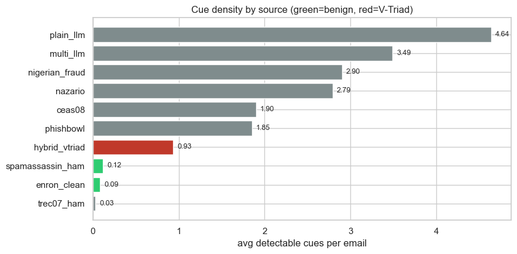
HEADLINE - fewer cues → more clicks
The core finding. Each point is a phishing source: x = how detectable it is, y = how often agents fell for it.
hybrid_vtriad sits alone top-left: the fewest detectable cues of any source - real or synthetic - and the highest click rate.
| avg_cues | click_rate | |
|---|---|---|
| source | ||
| hybrid_vtriad | 0.933 | 0.920 |
| ceas08 | 1.900 | 0.827 |
| phishbowl | 1.852 | 0.817 |
| nazario | 2.791 | 0.621 |
| nigerian_fraud | 2.900 | 0.620 |
| multi_llm | 3.487 | 0.474 |
| plain_llm | 4.636 | 0.278 |
Spearman corr(cues, click_rate) = -0.96 (-1.0 = perfectly monotonic)
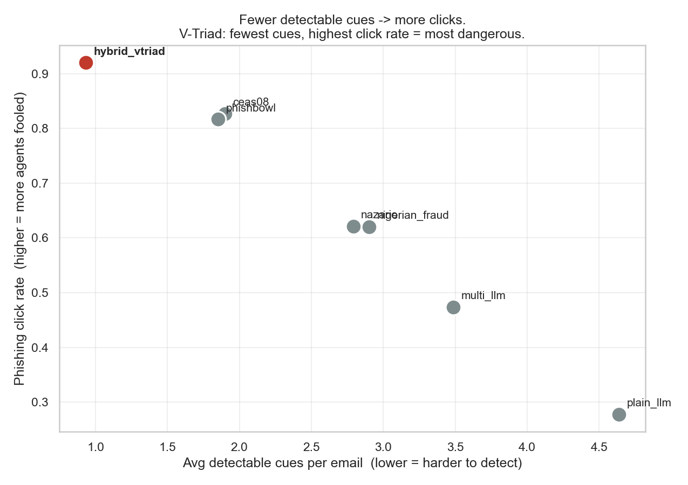
Click rate by source
Guided AI phishing beats real, human-authored phishing (CEAS, Phishbowl, Nazario, 419) - not just naive AI.
benign pass rate: 99.9% -> false-positive rate: 0.1%
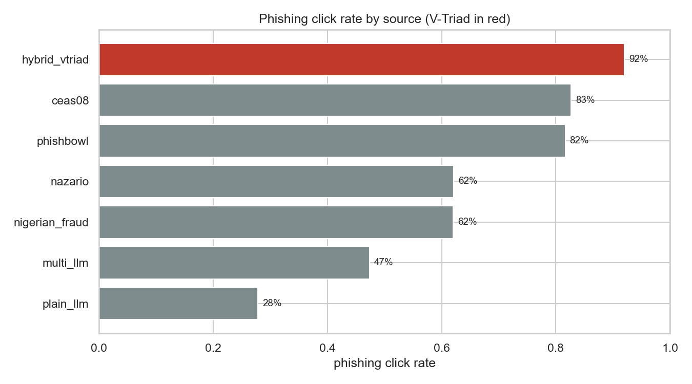
The workday fatigue effect
v1's curve was flat/slightly decreasing - the circadian term cancelled fatigue. v2's rises as agents deplete.
(Note: v1 ran on the old 250-email set with the old model, so this contrasts the whole pipeline, not the model alone. The within-agent measure in §9 is the clean, self-contained evidence.)
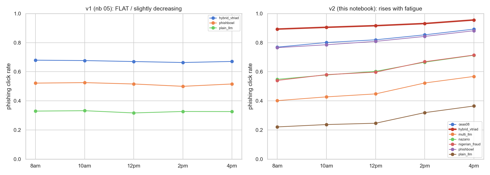
Controlled fatigue experiment
Two ways to isolate fatigue from the (large) individual differences between agents.
Within-agent workday effect (4pm - 8am): mean +0.1357 | positive for 29/30 agents Click rate by fatigue tertile: fatigue_level Low 0.6234 Medium 0.6396 High 0.6767
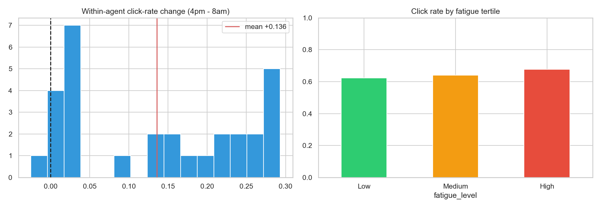
Perceived Vulnerability
Absent from v1 entirely, yet Shin-Carley report it as the strongest predictor of organizational damage. It enters FPL protectively: higher PV -> more caution.
Click rate by PV tertile (higher PV -> fewer clicks): pvbin low PV 0.7357 mid PV 0.5449 high PV 0.6575
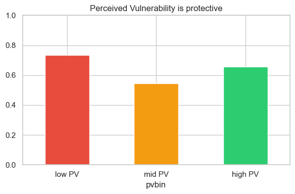
Agent traits vs outcome
Which agent properties actually track susceptibility. (05 had this; kept and extended with the v2 traits.)
Read the top row: base_threshold dominates; PV is protective; fatigue/FPL are confounded by threshold (see next section).
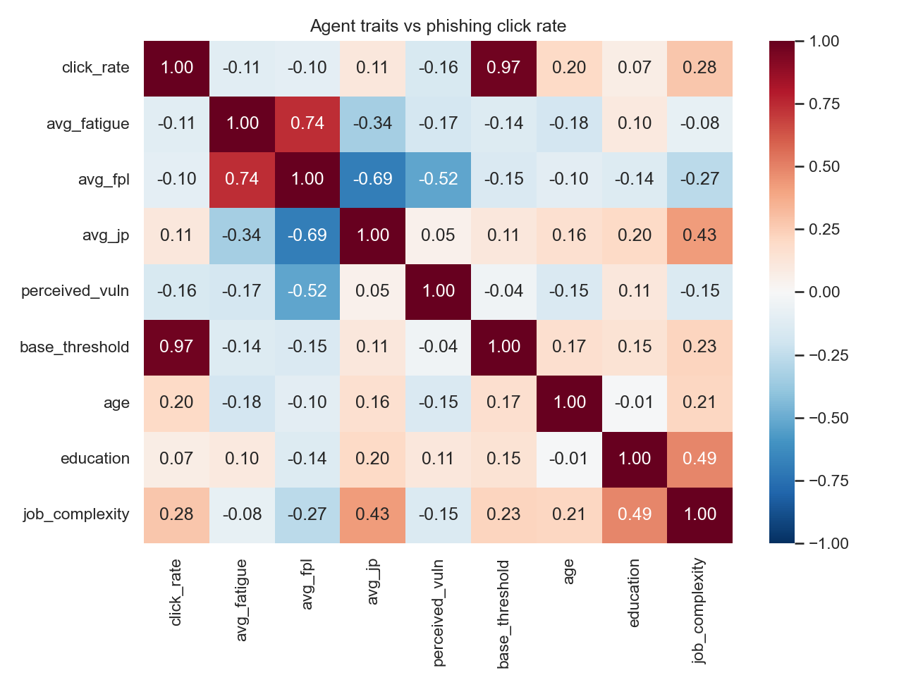
What still dominates - an honest decomposition
Between individuals, the base suspicion threshold still explains most variance (it's a big individual difference). Fatigue is a within-person, time-driven effect. The raw cross-agent fatigue correlation is confounded by the threshold, so we report the partial correlation.
Raw cross-agent correlations with click rate: base 0.973 fat -0.112 pv -0.163 Partial corr(click, fatigue | threshold, PV) = +0.008 (correct sign once threshold is controlled) Takeaway: individual caution sets the between-person baseline; fatigue moves each person within their own day.
Which cues get perceived, by source
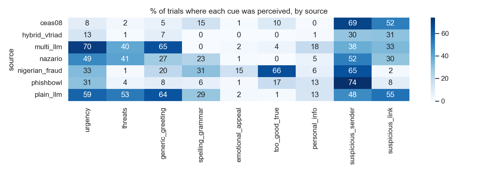
Agent coherence - the copula
v1 drew every trait independently, so an agent could be max-burnout and max-motivation and max-satisfaction. v2 imposes a realistic correlation structure while preserving each trait's exact range.
correlation matrix (17, 17) | min eigenvalue 0.1355 (PSD -> valid)
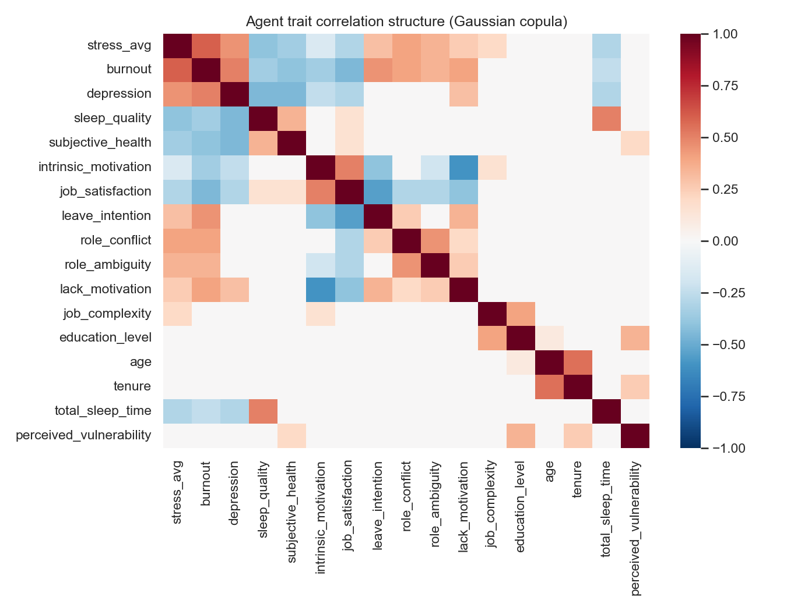
Robustness & sensitivity
The answer to "did you just tune it until it looked good?" We vary the random seed and the key coefficients and check the headline claim survives: V-Triad stays the top click rate, the workday effect stays positive, FPR stays low.
Run on a stratified subsample (40/source) so it re-executes in ~2 min - cues are already cached, so no API calls.
| test | vtriad_click | vtriad_is_top | within_delta | FPR | |
|---|---|---|---|---|---|
| 0 | seed=42 | 0.939 | True | 0.125 | 0.0 |
| 1 | seed=1 | 0.956 | True | 0.080 | 0.0 |
| 2 | seed=7 | 0.943 | True | 0.101 | 0.0 |
| 3 | drift K=1.0 | 0.931 | True | 0.087 | 0.0 |
| 4 | drift K=3.0 | 0.948 | True | 0.188 | 0.0 |
| 5 | lambda_PV=0.5 | 0.939 | True | 0.126 | 0.0 |
| 6 | lambda_PV=0.9 | 0.938 | True | 0.124 | 0.0 |
C:\Users\krish\AppData\Local\Temp\ipykernel_20356\3514174871.py:1: FutureWarning: DataFrameGroupBy.apply operated on the grouping columns. This behavior is deprecated, and in a future version of pandas the grouping columns will be excluded from the operation. Either pass `include_groups=False` to exclude the groupings or explicitly select the grouping columns after groupby to silence this warning.
sub = emails.groupby('source', group_keys=False).apply(lambda g: g.head(40)).reset_index(drop=True)
V-Triad is the TOP click rate in every case: True
workday fatigue effect positive in every case: True
benign FPR < 3% in every case: True
Organizational Damage Index (Shin-Carley)
An aggregate output metric using the reported regression Damage = -2.292z(JP) + 0.608z(Fatigue) - 5.584*z(PV).
⚠️ Read this honestly: it is a reported index, not external validation. Damage is built from the same JP/Fatigue/PV the model computes, so regressing it back on them is circular. And the -5.584 coefficient comes from the Phase-1 report - verify it against the primary Shin-Carley paper before citing.
| fatigue | jp | pv | clicks | damage_index | |
|---|---|---|---|---|---|
| agent_id | |||||
| agentv2_022 | 0.506 | 0.429 | 0.100 | 1516 | 11.749 |
| agentv2_008 | 0.243 | 0.427 | 0.164 | 3480 | 8.890 |
| agentv2_016 | 0.344 | 0.438 | 0.213 | 2555 | 8.292 |
| fatigue | jp | pv | clicks | damage_index | |
|---|---|---|---|---|---|
| agent_id | |||||
| agentv2_021 | 0.259 | 0.773 | 0.950 | 3106 | -13.329 |
| agentv2_018 | 0.242 | 0.611 | 0.971 | 1053 | -11.004 |
| agentv2_011 | 0.170 | 0.694 | 0.819 | 3855 | -9.756 |
Most vulnerable agents: Most protected agents: Damage Index vs ACTUAL phishing-click count: r = +0.092 (A positive r means the literature-weighted index ranks agents consistently with what the sim actually did.)
Summary
==============================================================
v2 SIMULATION - SUMMARY
==============================================================
corpus 1,595 emails across 10 segregated sources
scale 239,250 decisions (30 agents x 5 hours x 1,595 emails)
PER-SOURCE: cues -> click rate
hybrid_vtriad cues=0.93 click=92.0% <-- fewest cues, most clicks
ceas08 cues=1.90 click=82.7%
phishbowl cues=1.85 click=81.7%
nazario cues=2.79 click=62.1%
nigerian_fraud cues=2.90 click=62.0%
multi_llm cues=3.49 click=47.4%
plain_llm cues=4.64 click=27.8%
benign FPR 0.1%
workday effect +13.6% (within-agent, 4pm-8am)
cues<->click spearman -0.96
robustness V-Triad top in 7/7 configs
Caveats & honest limits
- Coefficients are modeling choices. ED weights, JP exponents,
lambda_PV, threshold drift and P_click centring were tuned for[0,1]bounds and monotonicity - not taken from any paper. Literature motivates the structure and signs only. - The Shin-Carley
-5.584PV coefficient is from the Phase-1 report and must be verified against the primary paper. The damage index (§16) is an index, not validation. - Synthetic phishing is self-generated (Groq llama-3.3-70b, fictional entities only). No public V-Triad corpus exists, so this class cannot be sourced externally.
- The threshold still dominates between agents (r~0.98). Making it partly dynamic surfaced the within-agent fatigue effect; correlating it with traits is a further option.
- The v1-vs-v2 workday chart (§8) changes model and dataset - treat §9's within-agent measure as the clean evidence.
- Extraction model matters: cue counts differ measurably between models, so a corpus must be extracted by ONE model (the cache is scoped per model for this reason). These results use local gemma4:12b, and the V-Triad ranking replicates on Groq llama-4-scout - so the headline is not an artifact of one extractor. llama-3.1-8b is rejected: it over-flags benign email (~1.7 cues vs ~0.0). Recorded in
DATA_PROVENANCE.md. - Licences: sources marked ⚠️ in
DATA_PROVENANCE.mdhave inherited/unclear licences - verify before publishing, cite the original corpora (not Kaggle mirrors), and ship loader code + DOIs rather than re-hosted data. P_clickis a reporting index only - the click/report decisions come from the per-cue Bernoulli loop.
notebooks/06_agent_simulation_v2.ipynb - every table, chart and printed statistic on this page is copied from that notebook's saved output, not recomputed. See the results summary for the condensed version, or open the notebook directly for the underlying code.